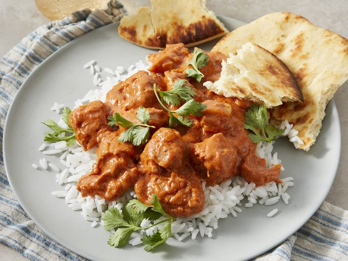

CHICKEN-MAKHANI-RECIPE

Chicken Makhani, also known as Butter Chicken, is a rich and creamy North Indian dish made with tender chicken pieces cooked in a spiced tomato and butter sauce. It's a popular dish that is often served with naan or rice.
Ingredients
- 1 lb boneless, skinless chicken thighs or breasts, cut into bite-sized pieces
- 1 cup plain yogurt
- 2 tablespoons lemon juice
- 2 teaspoons ground cumin
- 2 teaspoons ground coriander
- 1 teaspoon turmeric powder
- 1 teaspoon garam masala
- 1 teaspoon chili powder
- 1 teaspoon salt
- 3 tablespoons butter
- 1 large onion, finely chopped
- 3 cloves garlic, minced
- 1 tablespoon grated fresh ginger
- 1 can (14 oz) crushed tomatoes
- 1 cup heavy cream
- Fresh cilantro leaves, chopped (for garnish)
STEPS
- In a large bowl, combine the yogurt, lemon juice, cumin, coriander, turmeric, garam masala, chili powder, and salt. Add the chicken pieces and coat them well with the marinade. Cover and refrigerate for at least 1 hour, or overnight for best results.
- Heat 2 tablespoons of butter in a large skillet or pan over medium heat. Add the chopped onion and sauté until golden brown, about 5-7 minutes.
- Add the minced garlic and grated ginger to the pan and cook for another 1-2 minutes until fragrant.
- Add the crushed tomatoes to the pan and cook for about 10 minutes, stirring occasionally, until the sauce thickens and the oil starts to separate.
- In a separate pan, melt the remaining 1 tablespoon of butter over medium heat. Add the marinated chicken pieces and cook until they are no longer pink in the center, about 5-7 minutes. You may need to do this in batches to avoid overcrowding the pan.
- Once the chicken is cooked, add it to the tomato sauce in the first pan. Stir well to combine.
- Reduce the heat to low and stir in the heavy cream. Simmer the chicken in the sauce for another 10-15 minutes, allowing the flavors to meld together. Adjust the seasoning with salt to taste.
- Garnish with chopped fresh cilantro leaves before serving.
BACK-TO-HOME